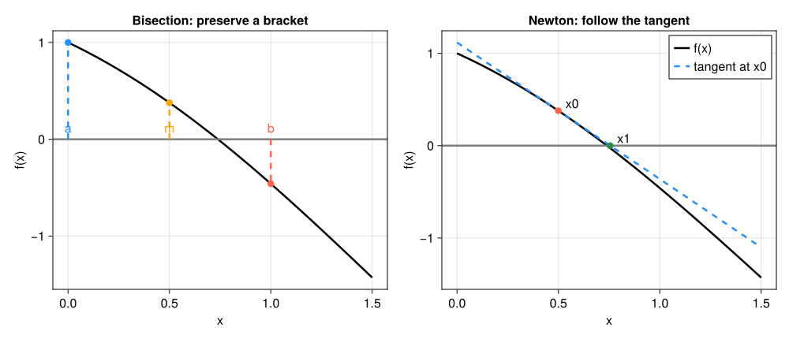

7. 非線形方程式#
これまでに扱った連立一次方程式では、係数行列を分解すれば有限回の演算で解を構成できた。一方、
のような非線形方程式には、一般にそのような万能の公式はない。そこで、解がありそうな場所を探し、近似値を反復によって更新し、得られた値が信頼できるかを検証する。
たとえば、落下速度が所定の値になる時刻、化学反応が平衡に達する濃度、観測値とモデル予測が一致するパラメータは、いずれも「ある量の差を \(f(x)\) と置き、\(f(x)=0\) を解く」問題になる。非線形方程式は単独の話題というより、数値解析のさまざまな場面に現れる基本部品である。
本章では、次の共通手順を意識する。
方程式を定め、解の存在範囲や個数を調べる。
問題の情報に応じて反復法を選ぶ。
残差と更新量を記録して停止する。
初期値や許容誤差を変えて結果を検証する。
7.1. この章の目標#
根、近似解、残差、前進誤差を区別できる。
二分法の前提を確認し、必要反復回数を事前に見積もれる。
不動点反復とNewton法を局所的な近似から導出できる。
収束の速さだけでなく、初期値依存性と停止条件を評価できる。
導関数の有無と安全性の要請から解法を選べる。
内部収益率（IRR）の計算のような応用で、解の個数や前提を確認してから解法を使える。
この章で使う数学（復習）
中間値の定理：連続な関数が \(f(a)>0\)、\(f(b)<0\) なら、\(a\) と \(b\) の間のどこかで \(f(x)=0\) となる。グラフが途切れずに横軸をまたぐ、という直感でよい。
接線の式：点 \(a\) における \(y=f(x)\) の接線は \(y=f(a)+f'(a)(x-a)\) である。Newton法はこれを使う。
\(\log_2\)：\(2^k=N\) となる \(k\) が \(\log_2N\) である。例えば \(\log_2 1024=10\)。「半分にする操作を何回繰り返せば \(1/N\) になるか」を表す。
7.2. 計算を始める前に調べること#
第5・6章では、未知数について1次の式を扱った。例えば \(x=\cos x\) では、\(x\) が関数の中にも現れ、同じ消去法では取り出せない。「候補を作り、式に代入し、候補を直す」という反復が必要になる。まずは解を挟む区間を探し、その後に更新を速める工夫を学ぶ。
\(f(x_*)=0\) を満たす \(x_*\) を根という。計算機が返すのは通常、真の根そのものではなく近似値 \(\hat{x}\) である。このとき
をそれぞれ前進誤差と残差という。前進誤差には未知の \(x_*\) が入るため、実際の計算中に直接評価できないことが多い。それに対し、残差は \(\hat{x}\) を \(f\) に代入すれば計算できる。
ただし、残差が小さいだけで前進誤差も小さいとは限らない。根の近くで \(f'(x_*)\neq0\) なら、1次近似から
となる。傾きが小さい根では、同じ残差でも \(x\) の誤差が大きくなり得る。これは第4章で学んだ「問題の条件」と「計算結果の残差」を分ける考え方の非線形版である。
数値解法を選ぶ前に、少なくとも次を確認する。
\(f\) はどの区間で定義され、連続か。
グラフ、符号、単調性から根の存在や個数を絞れるか。
\(f'(x)\) を計算できるか。また、根の近くで小さくならないか。
求めたいのは一つの根か、指定区間内のすべての根か。
\(x\) と \(f(x)\) の典型的な大きさはどの程度か。
本章では一貫して
を基本例に使う。\(f(0)=1>0\)、\(f(1)=\cos1-1<0\) であり、\(f\) は \([0,1]\) で連続なので、この区間に少なくとも一つ根がある。また \(f'(x)=-\sin x-1<0\) なので、根は一つだけである。
f(x) = cos(x) - x
# まず粗い点で符号を調べる。これは証明ではなく、探索区間を決めるための観察である。
for x in 0.0:0.2:1.0
println("x = $(round(x, digits=1)), f(x) = $(round(f(x), digits=6))")
end
x = 0.0, f(x) = 1.0
x = 0.2, f(x) = 0.780067
x = 0.4, f(x) = 0.521061
x = 0.6, f(x) = 0.225336
x = 0.8, f(x) = -0.103293
x = 1.0, f(x) = -0.459698
7.3. 二分法：根を挟む区間を縮める#
\(f\) が \([a,b]\) で連続であり、\(f(a)f(b)<0\) なら、中間値の定理により区間内に根が少なくとも一つある。二分法は、この符号変化を保つことを不変条件として使う。
中点 \(c=(a+b)/2\) を計算する。
\(f(c)\) の符号を調べる。
\([a,c]\) と \([c,b]\) のうち、端点で符号が変わる方だけを残す。
区間が十分狭くなるまで繰り返す。
最初の区間幅を \(b_0-a_0\) とする。\(k\) 回目に評価する中点 \(c_k\) は、幅 \((b_0-a_0)/2^{k-1}\) の区間の中点なので、区間内のある根 \(x_*\) に対して
が成り立つ（ここでは厳密演算を考える）。例えば最初の区間が \([0,1]\) なら、最初の中点は0.5、誤差上界は0.5である。\(f(0.5)>0\) なので次は \([0.5,1]\) を残し、中点0.75、上界0.25となる。
したがって前進誤差を \(\varepsilon_x\) 以下に保証したければ、
を満たす反復回数を用意すればよい。二分法の長所は、速さよりも「根を挟んでいる」という保証を計算中ずっと維持できる点にある。
警告
\(f(a)f(b)>0\) でも根がないとは限らない。たとえば \((x-1)^2\) は根の両側で符号が変わらない。二分法の仮定は十分条件であって、根の存在に必要な条件ではない。
function bisection(f, a, b; xtol=1e-10, ftol=0.0, maxiter=100)
a, b = float(a), float(b)
a < b || error("a < b となる区間を指定してください")
fa, fb = f(a), f(b)
isfinite(fa) && isfinite(fb) || error("端点で有限な関数値が必要です")
abs(fa) ≤ ftol && return (root=a, iterations=0, converged=true, history=NamedTuple[])
abs(fb) ≤ ftol && return (root=b, iterations=0, converged=true, history=NamedTuple[])
signbit(fa) != signbit(fb) || error("端点で符号が変わる区間を指定してください")
history = NamedTuple[]
for k in 1:maxiter
c = a + (b-a)/2 # この例の有限な区間の中点
fc = f(c)
isfinite(fc) || error("区間内で有限な関数値が必要です")
push!(history, (k=k, a=a, b=b, c=c, fc=fc, error_bound=(b-a)/2))
if abs(fc) ≤ ftol || (b-a)/2 ≤ xtol
return (root=c, iterations=k, converged=true, history=history)
elseif signbit(fa) != signbit(fc)
b, fb = c, fc
else
a, fa = c, fc
end
end
return (root=a+(b-a)/2, iterations=maxiter, converged=false, history=history)
end
bis = bisection(f, 0.0, 1.0)
for row in bis.history[1:min(5, end)]
println("k=$(row.k): [$(round(row.a,digits=5)), $(round(row.b,digits=5))], " *
"c=$(round(row.c,digits=5)), f(c)=$(round(row.fc,digits=6))")
end
println("根 ≈ $(bis.root), 反復回数 = $(bis.iterations), 残差 = $(abs(f(bis.root)))")
k=1: [0.0, 1.0], c=0.5, f(c)=0.377583
k=2: [0.5, 1.0], c=0.75, f(c)=-0.018311
k=3: [0.5, 0.75], c=0.625, f(c)=0.185963
k=4: [0.625, 0.75], c=0.6875, f(c)=0.085335
k=5: [0.6875, 0.75], c=0.71875, f(c)=0.033879
根 ≈ 0.7390851332456805, 反復回数 = 34, 残差 = 5.1078363760836965e-11
7.4. 不動点反復：方程式を更新式へ書き換える#
\(f(x)=0\) を
と書き換え、
と更新する方法を不動点反復という。根は写像 \(g\) によって動かない点、すなわち不動点である。\(\cos x-x=0\) なら \(g(x)=\cos x\) とすればよい。
例えば初期値0.5から \(x_1=\cos(0.5)\approx0.8776\)、\(x_2=\cos(0.8776)\approx0.6390\) と進む。値が上下に動くこと自体は失敗ではなく、その振れが縮まるかを見る。
真の解を \(x_*\) とし、\(g\) がその近くで連続微分可能とする。局所的な1次近似により
である。したがって \(|g'(x_*)|<1\) なら十分近くから始めた誤差は縮み、\(|g'(x_*)|>1\) なら一般に誤差は広がる。同じ方程式でも、書き換え方によって収束性が変わる点が重要である。
function fixed_point(g, x0; xtol=1e-10, maxiter=100)
x = float(x0)
history = [x]
for k in 1:maxiter
xnew = g(x)
isfinite(xnew) || return (root=x, iterations=k, converged=false, history=history)
push!(history, xnew)
if abs(xnew-x) ≤ xtol*(1+abs(xnew))
return (root=xnew, iterations=k, converged=true, history=history)
end
x = xnew
end
return (root=x, iterations=maxiter, converged=false, history=history)
end
fp = fixed_point(cos, 0.5)
println("最初の近似値 = ", round.(fp.history[1:6], digits=8))
println("根 ≈ $(fp.root), 反復回数 = $(fp.iterations), 残差 = $(abs(f(fp.root)))")
最初の近似値 = [0.5, 0.87758256, 0.63901249, 0.8026851, 0.69477803, 0.76819583]
根 ≈ 0.7390851331630651, 反復回数 = 56, 残差 = 8.71877015029554e-11
7.5. Newton法：曲線を接線で置き換える#
現在の近似値 \(x_k\) の近くで \(f\) を1次式に近似する。
右辺が0になる修正量 \(s_k\) を選ぶと、
を得る。幾何学的には、\((x_k,f(x_k))\) における接線と \(x\) 軸の交点を次の近似値にする操作である。
単根 \(x_*\) に十分近く、\(f'(x_*)\neq0\) で、\(f\) が十分滑らかなら、Newton法は2次収束する。これは大まかに
を意味する。収束域に入った後は正しい桁数が反復ごとにほぼ倍増する。一方、初期値が根から遠い、導関数が0に近い、途中に定義できない点がある、といった場合には失敗し得る。
function newton(f, df, x0; xtol=1e-10, ftol=1e-12, maxiter=30)
x = float(x0)
history = NamedTuple[]
for k in 1:maxiter
fx = f(x)
isfinite(fx) || return (root=x, iterations=k-1, converged=false, reason="nonfinite residual", history=history)
if abs(fx) ≤ ftol
return (root=x, iterations=k-1, converged=true, reason="residual", history=history)
end
dfx = df(x)
if !isfinite(dfx) || iszero(dfx)
return (root=x, iterations=k-1, converged=false, reason="zero or nonfinite derivative", history=history)
end
step = -fx/dfx
xnew = x + step
push!(history, (k=k, x=x, fx=fx, dfx=dfx, step=step, xnew=xnew))
if !isfinite(xnew)
return (root=x, iterations=k, converged=false, reason="nonfinite iterate", history=history)
elseif abs(step) ≤ xtol*(1+abs(xnew))
return (root=xnew, iterations=k, converged=abs(f(xnew)) ≤ 10ftol,
reason="small step", history=history)
end
x = xnew
end
return (root=x, iterations=maxiter, converged=false, reason="maxiter", history=history)
end
df(x) = -sin(x) - 1
nt = newton(f, df, 0.5)
for row in nt.history
println("k=$(row.k): x=$(round(row.x,digits=12)), |f(x)|=$(round(abs(row.fx),sigdigits=4)), " *
"step=$(round(row.step,sigdigits=4))")
end
println("根 ≈ $(nt.root), 反復回数 = $(nt.iterations), 収束 = $(nt.converged)")
k=1: x=0.5, |f(x)|=0.3776, step=0.2552
k=2: x=0.755222417106, |f(x)|=0.0271, step=-0.01608
k=3: x=0.73914166615, |f(x)|=9.462e-5, step=-5.653e-5
k=4: x=0.739085133921, |f(x)|=1.181e-9, step=-7.056e-10
根 ≈ 0.7390851332151607, 反復回数 = 4, 収束 = true
Show code cell source
# 初回のみ: import Pkg; Pkg.add("CairoMakie")
using CairoMakie
CairoMakie.activate!(type="svg")
set_theme!(Theme(fontsize=16, linewidth=2.5))
figure_dir = isdir("pic") ? "pic" : joinpath("..", "pic")
f_plot(x) = cos(x)-x
df_plot(x) = -sin(x)-1
xgrid = range(0.0, 1.5, length=500)
a_plot, b_plot = 0.0, 1.0
m_plot = (a_plot+b_plot)/2
x0_plot = 0.5
x1_plot = x0_plot-f_plot(x0_plot)/df_plot(x0_plot)
tangent(x) = f_plot(x0_plot)+df_plot(x0_plot)*(x-x0_plot)
fig_roots = Figure(size=(1000, 430))
ax_bisect = Axis(fig_roots[1, 1]; xlabel="x", ylabel="f(x)",
title="Bisection: preserve a bracket")
lines!(ax_bisect, xgrid, f_plot.(xgrid); color=:black)
hlines!(ax_bisect, [0.0]; color=:gray50)
for (x, color, label) in ((a_plot, :dodgerblue, "a"),
(m_plot, :orange, "m"),
(b_plot, :tomato, "b"))
scatter!(ax_bisect, [x], [f_plot(x)]; color=color, markersize=12)
lines!(ax_bisect, [x, x], [0.0, f_plot(x)]; color=color, linestyle=:dash)
text!(ax_bisect, x, 0.04; text=label, color=color, align=(:center, :bottom))
end
ax_newton = Axis(fig_roots[1, 2]; xlabel="x", ylabel="f(x)",
title="Newton: follow the tangent")
lines!(ax_newton, xgrid, f_plot.(xgrid); color=:black, label="f(x)")
lines!(ax_newton, xgrid, tangent.(xgrid); color=:dodgerblue, linestyle=:dash,
label="tangent at x0")
hlines!(ax_newton, [0.0]; color=:gray50)
scatter!(ax_newton, [x0_plot], [f_plot(x0_plot)]; color=:tomato, markersize=12)
scatter!(ax_newton, [x1_plot], [0.0]; color=:seagreen, markersize=12)
text!(ax_newton, x0_plot, f_plot(x0_plot); text=" x0", align=(:left, :bottom))
text!(ax_newton, x1_plot, 0.0; text=" x1", align=(:left, :bottom))
axislegend(ax_newton; position=:rt)
save(joinpath(figure_dir, "nonlinear_iteration_geometry.svg"), fig_roots)
fig_roots


図 7.1 二分法は根を挟むという安全性を保って区間を縮める。Newton法は現在点の接線と横軸の交点へ進むため速いが、初期値によっては根から離れる。#
7.6. 割線法：導関数を差分で置き換える#
導関数を解析的に求めにくいときは、Newton法の \(f'(x_k)\) を直近2点の傾き
で置き換える。これが割線法であり、更新式は
となる。関数評価は通常1反復につき1回で済み、微分も不要である。収束は単根の近くでNewton法より遅いが、二分法より速いことが多い。ただし、二分法のように根を挟み続ける保証はない。
function secant(f, x0, x1; xtol=1e-10, ftol=1e-12, maxiter=50)
xprev, x = float(x0), float(x1)
fprev, fx = f(xprev), f(x)
for k in 1:maxiter
isfinite(fx) && isfinite(fprev) || return (root=x, iterations=k-1, converged=false)
abs(fx) ≤ ftol && return (root=x, iterations=k-1, converged=true)
denominator = fx-fprev
iszero(denominator) && return (root=x, iterations=k-1, converged=false)
xnew = x-fx*(x-xprev)/denominator
isfinite(xnew) || return (root=x, iterations=k, converged=false)
fnew = f(xnew)
if abs(fnew) ≤ ftol
return (root=xnew, iterations=k, converged=true)
elseif abs(xnew-x) ≤ xtol*(1+abs(xnew))
return (root=xnew, iterations=k, converged=false) # 小さな更新だけでは成功としない
end
xprev, fprev, x, fx = x, fx, xnew, fnew
end
return (root=x, iterations=maxiter, converged=false)
end
sc = secant(f, 0.0, 1.0)
println("割線法: 根 ≈ $(sc.root), 反復回数 = $(sc.iterations), 残差 = $(abs(f(sc.root))), 判定 = $(sc.converged)")
割線法: 根 ≈ 0.7390851332150012, 反復回数 = 5, 残差 = 2.667865928174251e-13, 判定 = true
7.7. 応用例：内部収益率（IRR）を求める#
投資の評価に使われる正味現在価値（NPV）は、将来の収入を割引率 \(r\) で現在の価値に換算して合計したものである。0年目の投資額を \(C_0<0\)、\(k\) 年目の収入を \(C_k\) とすると
となる。\(\mathrm{NPV}(r)=0\) となる割引率を内部収益率（IRR）という。「この投資は年利何%の運用に相当するか」を表す指標で、表計算ソフトの IRR 関数も、内部で本章のような反復法を使っている。
\(\mathrm{NPV}(r)\) は \(r\) の \(n\) 次の分数式なので、一般には解の公式がなく、非線形方程式として数値的に解く。Newton法に使う導関数は
である。1000万円を投資し、その後4年間に300、400、500、200万円の収入がある例を計算しよう。まず表で符号の変化を探し、本章の bisection と newton を使う。
cashflow = [-1000.0, 300.0, 400.0, 500.0, 200.0] # 0年目（投資）〜4年目の収入
npv(r; C=cashflow) = sum(C[k+1]/(1+r)^k for k in 0:length(C)-1)
dnpv(r; C=cashflow) = sum(-k*C[k+1]/(1+r)^(k+1) for k in 1:length(C)-1)
for r in (0.0, 0.1, 0.2, 0.3)
println("r = $r: NPV = ", round(npv(r), digits=2))
end
irr_bisection = bisection(npv, 0.0, 0.5)
irr_newton = newton(npv, dnpv, 0.1)
println("二分法: IRR ≈ ", round(irr_bisection.root, digits=8), "（反復 ", irr_bisection.iterations, " 回）")
println("Newton法: IRR ≈ ", round(irr_newton.root, digits=8), "（反復 ", irr_newton.iterations, " 回）")
println("残差 NPV(IRR) = ", npv(irr_newton.root))
r = 0.0: NPV = 400.0
r = 0.1: NPV = 115.57
r = 0.2: NPV = -86.42
r = 0.3: NPV = -234.94
二分法: IRR ≈ 0.15322138（反復 33 回）
Newton法: IRR ≈ 0.15322138（反復 4 回）
残差 NPV(IRR) = -3.126388037344441e-13
\(r=0.1\) でNPVは正、\(r=0.2\) で負なので、IRRはその間にある。二分法とNewton法は同じ約15.32%を与え、反復回数はそれぞれ33回と4回である。この例のように「最初に投資し、その後は収入だけ」というキャッシュフローでは、NPVは \(r>-1\) で単調減少し、IRRは一つに定まる。
7.7.1. IRRが二つある場合#
では、最後に撤去費用などの支出がある場合はどうだろうか。\(C=(-100,230,-132)\) とすると、符号が2回変わる。
C_two = [-100.0, 230.0, -132.0] # 投資 → 収入 → 撤去費用
npv_two(r) = npv(r; C=C_two)
dnpv_two(r) = dnpv(r; C=C_two)
for r in 0.0:0.05:0.3
println("r = $(round(r, digits=2)): NPV = ", round(npv_two(r), digits=4))
end
for r0 in (0.0, 0.3)
result = newton(npv_two, dnpv_two, r0)
println("初期値 $r0 からのNewton法: IRR ≈ ", round(result.root, digits=8))
end
r = 0.0: NPV = -2.0
r = 0.05: NPV = -0.6803
r = 0.1: NPV = -0.0
r = 0.15: NPV = 0.189
r = 0.2: NPV = 0.0
r = 0.25: NPV = -0.48
r = 0.3: NPV = -1.1834
初期値 0.0 からのNewton法: IRR ≈ 0.1
初期値 0.3 からのNewton法: IRR ≈ 0.2
（-0.0 は、負のごく小さな値を小数点以下4桁に丸めた表示である。）
NPVは \(r=0.1\) と \(r=0.2\) の両方で0になる。実際、\(x=1/(1+r)\) と置くと \(-132x^2+230x-100=0\) という2次方程式になり、解は \(x=10/11\) と \(x=5/6\)、すなわち \(r=0.1\) と \(r=0.2\) である。Newton法は初期値によって異なるIRRへ収束し、どちらも「正しく」収束している。
この例から、次のことが分かる。
反復法が収束したことは、解が一つしかないことを保証しない。解の個数は、計算の前に問題の性質（ここではキャッシュフローの符号変化）から調べる必要がある。
区間 \([0,0.3]\) では両端のNPVがともに負なので、二分法は使えない。符号が変わらないことは、根がないことを意味しない（本章の最初の注意）。
IRRが二つあるとき、「この投資の利回りは10%」と一つだけ報告するのは誤解を招く。数値計算の結果を、元の問題の意味に照らして解釈することも検証の一部である。
7.8. 停止条件と解法の安全装置#
反復法は「真の誤差が0になったら」停止することはできない。実用上は、異なる失敗を検出する複数の条件を併用する。
残差：\(|f(x_k)|\leq f_{\mathrm{tol}}\)。方程式をどの程度満たすかを測る。
相対的な更新量：\(|x_{k+1}-x_k|\leq x_{\mathrm{tol}}(1+|x_{k+1}|)\)。反復が動かなくなったことを測る。
最大反復回数：収束しない計算を必ず終了させる。
異常値：
InfやNaN、0の導関数などを検出する。小さいかどうかは関数の尺度にもよる。
更新量が小さくても、丸めによる停滞などで残差が大きいままの場合がある。反対に残差が小さくても、傾きが小さければ前進誤差は大きいかもしれない。少なくとも残差と更新量の両方を報告する習慣をつける。
Newton法と二分法を組み合わせる混合法もある。符号変化区間を維持し、Newton法の候補が区間外に出る場合や、十分な進展が得られない場合に二分法へ戻す。区間内に入ることだけで速い縮小が保証されるわけではないため、進展の確認も必要になる。
利用できる情報・状況 |
第一候補 |
主な確認事項 |
|---|---|---|
連続性と符号変化区間が分かる |
二分法 |
区間幅と残差 |
良い初期値と導関数がある |
Newton法 |
導関数、更新量、残差 |
導関数がないが初期値を2点選べる |
割線法 |
分母、更新量、残差 |
確実性と速さを両方重視する |
混合法 |
符号変化区間を維持したか |
7.9. \(\clubsuit\) Newton法の収束次数と重根#
ここまでは \(f'(x_*)\neq0\) を満たす単根を暗黙に考えた。Taylor展開を用いると、単根の近くでは
となり、2次収束が得られる。
一方、\(f(x)=(x-x_*)^m q(x)\)、\(q(x_*)\neq0\) のような重複度 \(m\) の根では、通常のNewton法は
となり、1次収束まで遅くなる。重複度 \(m\) が既知なら
と修正すれば2次収束を回復できる。この例は「アルゴリズムの性能は公式だけでなく、問題が満たす仮定に依存する」ことをよく示している。
h(x) = (x-1)^2
dh(x) = 2(x-1)
ordinary = newton(h, dh, 2.0; xtol=1e-14, ftol=1e-28)
errors = [abs(row.xnew-1) for row in ordinary.history[1:min(6, end)]]
println("通常のNewton法の誤差 = ", errors)
function modified_newton(f, df, x0, multiplicity; nsteps=6)
x = float(x0)
values = [x]
for _ in 1:nsteps
iszero(f(x)) && break
iszero(df(x)) && error("導関数が0です")
x -= multiplicity*f(x)/df(x)
push!(values, x)
end
return values
end
println("重複度を使った更新値 = ", modified_newton(h, dh, 2.0, 2))
通常のNewton法の誤差 = [0.5, 0.25, 0.125, 0.0625, 0.03125, 0.015625]
重複度を使った更新値 = [2.0, 1.0]
7.10. \(\clubsuit\) 非線形連立方程式#
\(F:\mathbb{R}^n\to\mathbb{R}^n\) に対する
を考える。スカラーの導関数に相当するのがJacobian（ヤコビ）行列
である。\(x_k\) の周りで \(F(x_k+s)\approx F(x_k)+J(x_k)s\) と線形化し、
と更新する。ここで重要なのは、Newton法の1反復が線形方程式を解く問題になることである。第5章と同じく inv(J)*(-F) と逆行列を陽に作らず、J \ (-F) と解く。同じJacobianを何度か使える近似法では、分解の再利用が計算量削減につながる。
例として、単位円 \(x_1^2+x_2^2=1\) と直線 \(x_1=x_2\) の交点を求める。
using LinearAlgebra
F(x) = [x[1]^2+x[2]^2-1; x[1]-x[2]]
J(x) = [2x[1] 2x[2]; 1.0 -1.0]
function newton_system(F, J, x0; xtol=1e-10, ftol=1e-12, maxiter=20)
x = float.(copy(x0))
history = NamedTuple[]
for k in 1:maxiter
residual = F(x)
norm(residual) ≤ ftol && return (root=x, iterations=k-1, converged=true, history=history)
step = J(x) \ (-residual)
push!(history, (k=k, residual_norm=norm(residual), step_norm=norm(step)))
xnew = x+step
if norm(step) ≤ xtol*(1+norm(xnew))
return (root=xnew, iterations=k, converged=norm(F(xnew)) ≤ 10ftol, history=history)
end
x = xnew
end
return (root=x, iterations=maxiter, converged=false, history=history)
end
solution = newton_system(F, J, [0.8, 0.6])
for row in solution.history
println("k=$(row.k): ||F||=$(round(row.residual_norm,sigdigits=4)), " *
"||step||=$(round(row.step_norm,sigdigits=4))")
end
println("解 = $(solution.root), 残差ノルム = $(norm(F(solution.root)))")
k=1: ||F||=0.2, ||step||=0.1429
k=2: ||F||=0.02041, ||step||=0.0101
k=3: ||F||=0.000102, ||step||=5.102e-5
k=4: ||F||=2.603e-9, ||step||=1.301e-9
解 = [0.7071067811865476, 0.7071067811865476], 残差ノルム = 2.220446049250313e-16
7.11. \(\clubsuit\) 最適化とのつながり#
利益を最大にする価格、誤差を最小にするパラメータなど、「ある量を最大・最小にする」問題を最適化という。滑らかな関数 \(\pi(p)\) が内部で最大・最小になる点では \(\pi'(p)=0\) が成り立つので、最適化は「導関数の根を探す」非線形方程式の問題に帰着できる。この方程式にNewton法を使うと
となり、2階導関数（曲がり具合）を使って極値へ近づく方法になる。ただし \(\pi'(p)=0\) は最大点だけでなく最小点や、どちらでもない点でも成り立つ。得られた点で \(\pi''(p)<0\)（上に凸）かを確かめ、区間の端点での値とも比べる必要がある。
機械学習で使われる勾配降下法も、多変数の最適化を反復で解く方法である。本章で学んだ「初期値への依存」「停止条件」「収束の速さと安全性の交換」は、そのまま最適化の反復法にも当てはまる。
7.12. まとめ#
本章のまとめ
二分法は根を挟む区間、Newton法は接線、割線法は2点の傾きを利用する。不動点反復では式の書き換え方が収束性を変える。速い方法ほど、初期値や途中の振る舞いを確認する必要がある。
本文の二分法は既定で ftol=0 とし、区間幅による停止を基本にしている。正の ftol を指定して残差だけで止めた場合は、指定した xtol の誤差保証とは別の判定になる。また、不動点反復の小さな更新量は真の誤差そのものではない。関数の戻り値にある converged は実装した停止条件の判定であり、根の一意性や要求精度をすべて保証する印ではない。
次の第8章では、関数を近くの値から近似し、微分や積分の計算へ使う。
7.13. 演習#
本文の式・表・出力を使って説明してよい。
演習
区間を縮める：\(f(x)=\cos x-x\) について、本文の値を使い \([0,1]\) から最初の2回の中点と、残す区間を書け。なぜその側を残すのか。
接線で更新する：\(f(x)=x^2-2\)、\(f'(x)=2x\) とし、\(x_0=1.5\) からNewton法を1回だけ手計算せよ。接線の式と、次の候補がどこにあるかを説明せよ。
停止の読み方：「前回からほとんど値が動かない」「式への代入値が小さい」「根を挟む区間が狭い」は、それぞれ何を確認しているか。真の根を知らなくても前進誤差の上界が分かるのは、どの方法のどの条件か。
IRRを手と計算機で求める：キャッシュフロー \((-100,60,60)\) のIRRを、\(x=1/(1+r)\) と置いて2次方程式の解の公式で求めよ。次に
bisectionで同じ値が得られるか確かめ、区間 \([0,1]\) から誤差 \(10^{-4}\) を保証するのに必要な反復回数を本文の式で見積もって、実際の反復回数と比べよ。探究：解が複数ある問題の報告：本文の \(C=(-100,230,-132)\) について、Newton法の初期値を \(-0.5\) から \(1.0\) まで0.05刻みで変え、どの初期値からどちらのIRRへ収束するか（または失敗するか）を表にせよ。境目はどこにあり、それは \(\mathrm{NPV}'(r)=0\) となる点とどう関係するか。最後に、この投資の「利回り」を上司に報告するとしたら、どのように説明するのが誠実かを、数値計算の結果を根拠に述べよ。
7.14. 参考文献と関連する節#
Driscoll and Braun, Fundamentals of Numerical Computation, Newton’s method.